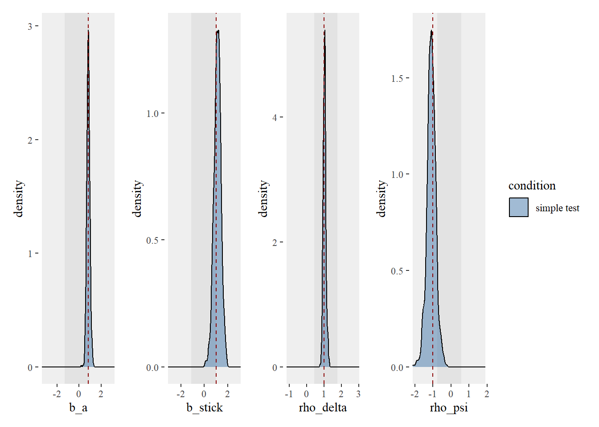

library(tidyverse)
library(cmdstanr)
library(loo)
source("../../functions/import_data.R")
source("../../functions/prep_data.R")
source("../../functions/compute_summary_stats.R")
source("../../functions/plot_model.R")
source("../../functions/plot_data.R")
source("../../functions/post_functions.R")
source("../../functions/sim_foraging_data.R")
options(mc.cores = 4)
# set global ggplot theme
theme_set(ggthemes::theme_tufte())2) fitting the NEW old foraging model - to simulated data
Fitting Model to Simulated Data
- Model 1.0: the original model first detailed in Clarke et al (2022), reimplemented in new code. The only other edit is to correctly calculate absolute proximity (we previously scaled before calculating inter-item distances, which led to expansion of vertical distances compared to the horizontal in cases where foraging stimuli were arranged on a rectangular grid - this minor edit makes little difference to the overall fit of the model).
- Model 1.1: the same as model 1.1., except it uses relative proximity - for each item selection, we divide all inter-target distances by the distance to the closest item. The idea behind this is that it may allow the model’s proximity weighting to cope better towards the end of a trial when the items are sparser.
Model 1.0
d <- readRDS("scratch/d_1_0.rds")
fit <- readRDS("scratch/multi_level_1_0_tmp.rds")
item_class_weights = list(c(0.7, 0.3, 0, 0))
b_stick = 1
rho_delta = 15
rho_psi = -1Posterior Density Plots
We can plot both fixed and random effects from the model.
post <- extract_post(fit, d, multi_level = TRUE)Fixed Effects
plot_model_fixed(post, gt = list(b_a = qlogis(item_class_weights[[1]][1]),
b_stick = b_stick,
rho_delta = rho_delta,
rho_psi = rho_psi))
Random Effects
plot_model_random(post)Model Accuracy
pred <- summarise_postpred(fit, d)
plot_model_accuracy(pred)`summarise()` has grouped output by 'found'. You can override using the
`.groups` argument.
Model 1.1
d2 <- readRDS("scratch/d_1_1.RDS")
fit <- readRDS("scratch/multi_level_1_1_tmp.rds")
rho_delta = 1Posterior Density Plots
post <- extract_post(fit, d2, multi_level = TRUE)Fixed Effects
plot_model_fixed(post, gt = list(b_a = qlogis(item_class_weights[[1]][1]),
b_stick = b_stick,
rho_delta = rho_delta,
rho_psi = rho_psi))
Random Effects
plot_model_random(post)Model Accuracy
pred <- summarise_postpred(fit, d2)
plot_model_accuracy(pred)`summarise()` has grouped output by 'found'. You can override using the
`.groups` argument.Model comparison
elpd_1_0 <- readRDS('scratch/elpd_1_0.rds')
elpd_1_1 <- readRDS('scratch/elpd_1_1.rds')
loo_compare(elpd_1_0, elpd_1_1) elpd_diff se_diff
model2 0.0 0.0
model1 -48.2 9.4